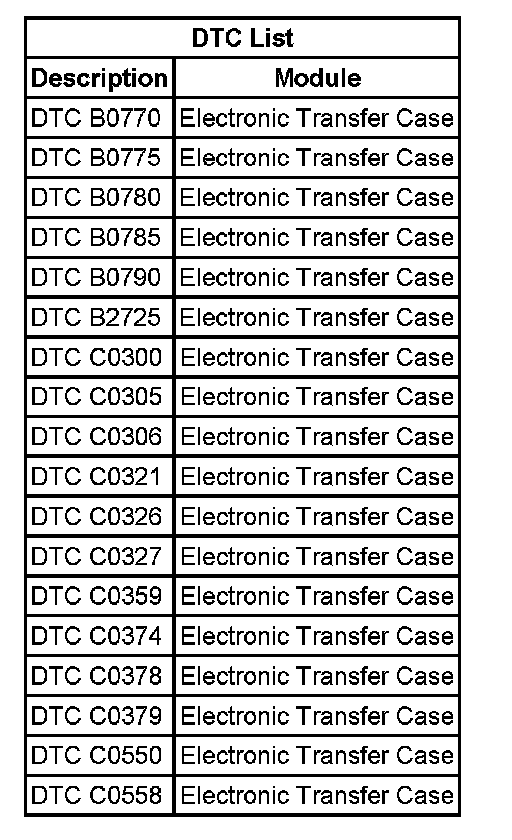

Operation CHARM
: Car repair manuals for everyone.
Home
>>
Cadillac
>>
2007
>>
Escalade ESV AWD V8-6.2L
>>
Repair and Diagnosis
>>
A L L Diagnostic Trouble Codes ( DTC )
>>
Testing and Inspection
>>
Diagnostic Trouble Code Descriptions
>>
Diagnostic Trouble Code (DTC) List/Type
Diagnostic Trouble Code (DTC) List/Type
Diagnostic Trouble Code (DTC) List
B0770-B2725/C0300-C0558:
